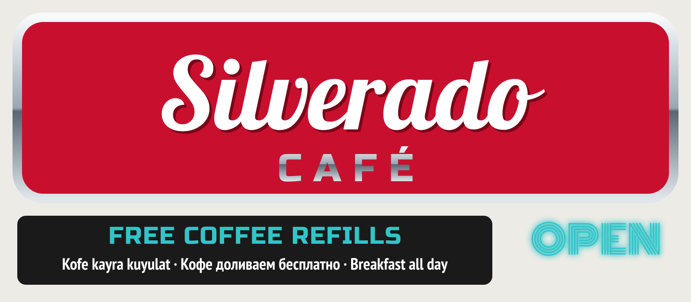

Silverado Café
Burgers on Tulpar delivery till 21:00. Coffee refills still only at the counter.
♥ 8 · Comment
Diner on the strip since 2008: a counter and eight booths. Breakfast all day, burgers, pancakes. Bottomless coffee, the only refill in Talas.
Burgers on Tulpar delivery till 21:00. Coffee refills still only at the counter.
♥ 8 · Comment| Breakfast plate | 25 som |
| Burger | 30 som |
| Pancakes | 18 som |
| Bottomless coffee | 8 som |
Prices as given by the business. Updated 20.10.2026.
Wade will tell you about every generator on the base. Coffee keeps coming.
Бургеры хорошие, кофе без ограничений.
Reviews are shared with Kartalar · Attelkom Maps. To write a review, log in with your Attelkom personal account.